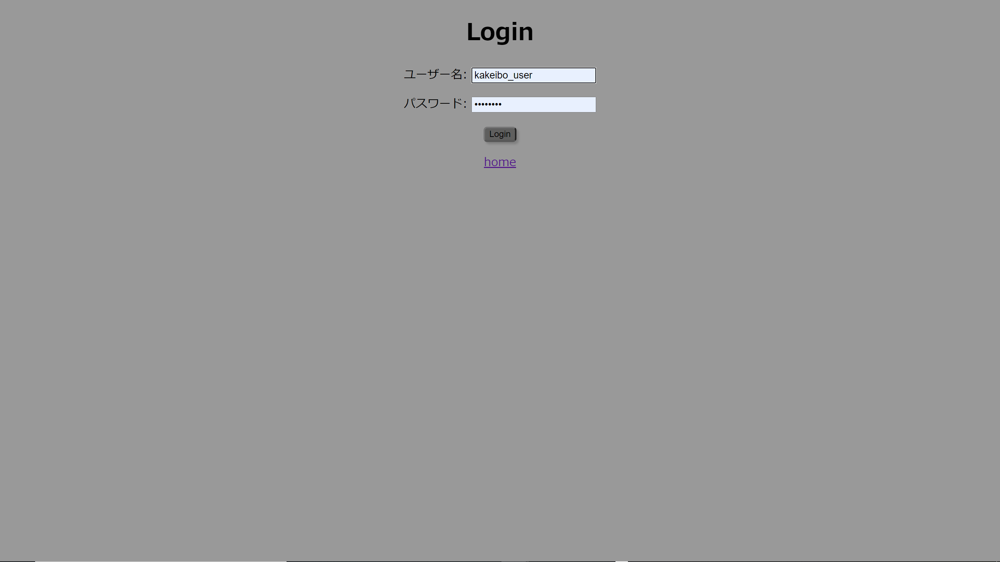
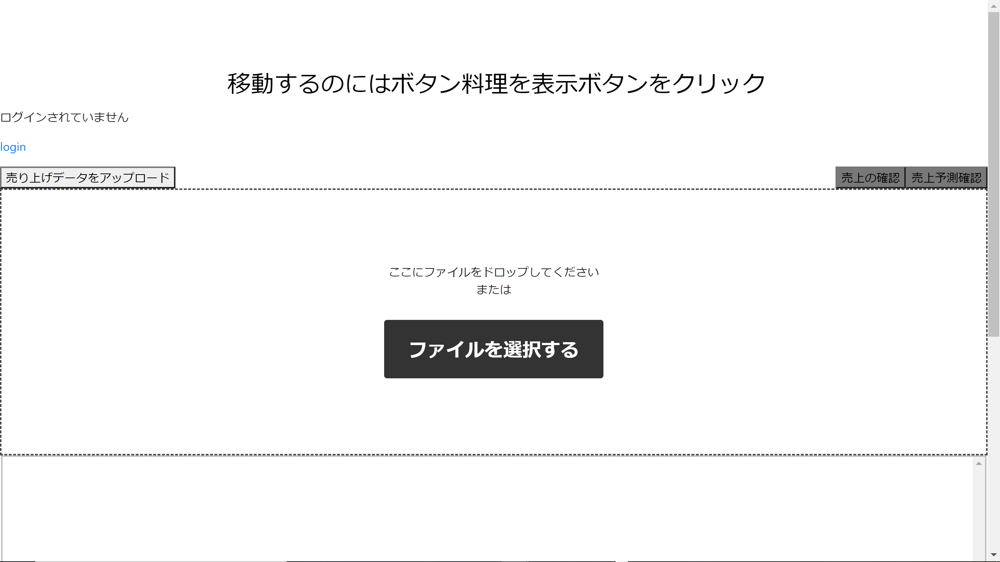
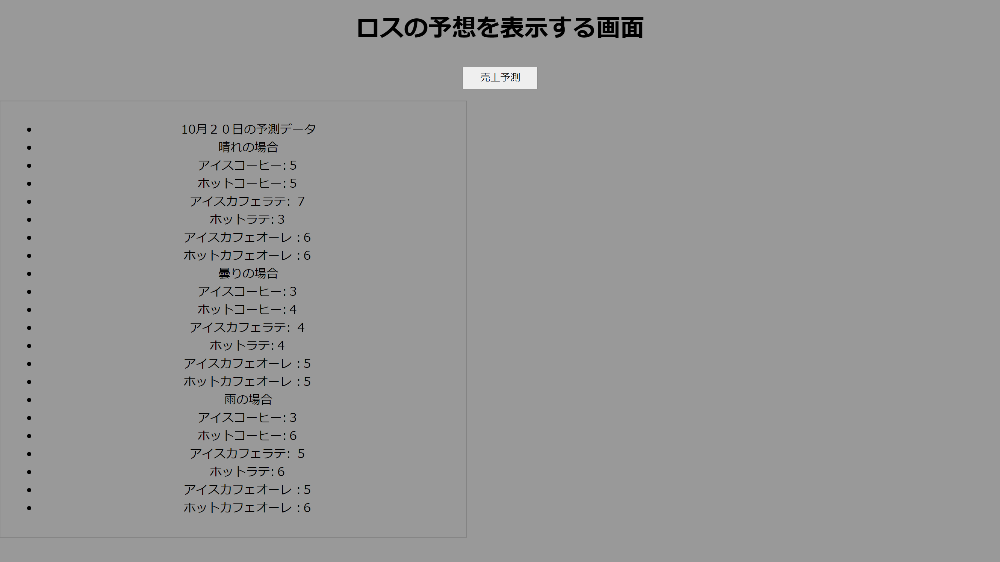

今日、コロナウイルスが流行っている中、飲食店では色々な問題を抱えている。その中でも食品のロスが一番の問題だと言える。飲食店のフードロスとは賞味期限（消費期限）が切れてしまった商品がたくさん出てお店に置けなくなり廃棄になってしまうことである。
世界ではまだ食べられる食料が廃棄されていて、途上国を中心に8億人以上が十分な量の食材を食べることができず、栄養不足、食糧不足に苦しんでいる。それでも世界的に問題となっている食品ロスは今では世界で年間１３億トン、日本では年間2531万トンの食品ロスが出ている。また、日本人の1人あたりの食品ロス量は1年で約47kgと言われている。これは毎日茶碗１杯分のご飯を捨てていることと同じ量になっている。
フードロスは飲食店舗、家庭での廃棄の燃焼処理で起きるCO2が地球温暖化の要因に、また資源の無駄な排出などの問題が挙げられる。また、社会的な問題以外にも飲食店舗ではお客様に提供できない食材（ブロッコリーの茎など）や賞味期限切れ（消費期限切れ）などの食材の廃棄でおきたフードロスが多いことにより売り上げという点において赤字になったり、家庭内の問題では食べられる部分の廃棄や賞味期限切れ（消費期限切れ）などの食材の廃棄などで家計にも支障をきたす場合がある。この賞味期限切れ（消費期限切れ）で起きる廃棄という問題は今回私たちグループが着目している問題点である。また間接的ではあるが貧困により満足に食事ができない人々に分け与える食料が少なくなったりすることも問題点としてあげられる。
フードロスがなぜ起きてしまうのかだが、一つ目に調理せずに捨ててしまう。これは別名[直接廃棄]と呼ばれ、直接廃棄が発生する原因としては食品を買いすぎて使いきれずに賞味期限（消費期限）が切れてしまい廃棄してしまう事が主な要因である。

この画面で登録したユーザーはログインをすることで以前使用したデータを保存した状態にすることができる。

この画面でデータファイルを読み込み売上予測を出すことができる。

この画面は予測した結果次の日のお客が頼むであろう予測データを割り出すことができる。
日本だけで年間600万tもの食品ロスがある
↓
仕入れた食材と実際に使う食材の量に差がある事が原因
↓
飲食店が食材を仕入れる際に差が生まれないように売り上げ予測ができるアプリを提案する
↓
レジのデータを読み込む機能、売上予測機能